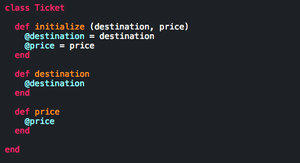

Staying Classy with Ruby Classes
Post #5
11.8.15
Any basic searches about writing in Ruby will undoubtedly return conversations about objects. Ruby is an object-oriented language, and understanding classes allows us to manipulate large quantities of objects. Sure, we could create a new object and add a run one method at a time -- but that would take way too long. Consider an airline booking site such as Expedia or Orbitz. Each ticket will have to run a method price to determine the cost. If we're monitoring thousands of tickets at the same time, a class will allow us to process more information at a quicker rate.
Let's keep going with the airline ticket example. Our team wants to be able to run through all tickets and give each a unique price. If we set up a ticket class, we can define the price method within the class to determine the price of each ticket. You can also think about classes as an organizer for objects. We can add additional methods such as dates and locations to cater towards additional ticketing information.
Something you may be wondering though -- if we're defining multiple methods inside a class then we'll end up with a ton of local variables. And that's the right thought! But we also need to become familiar with instance variables at this time. Instance variables are defined within a class that can run across our methods. This helps us avoid potential redundancies in code.
I feel like it'll best to take a look at a class and go from there:
The example above is a simple class in which we define two local variables. Note that the 'T' in 'Ticket' is capitalized. This will occur with all classes - similar to the way that methods begin with a lowercase letter.
The first method we define is the initialize method. We can use this method to set an object's state at the time of its creation. In our example, we are passing two arguments through the initialize method (destination, price). Within the method, we are defining the instance variables @destination and @price to be the values passed through the argument. The '@' symbol will be attached to all instance variables. As we discussed before, these instance variables can be used throughout other methods in a given class. The following methods each return an instance variable.
Classes are very useful when it comes to large groups of objects. We could continue to build our Ticket class in many different directions. For example, the methods could include conditions for looking up the least expensive tickets and planning a trip. Just keep in mind that every class has an 'end' and maintaining organization while introduces case senarios inside of methods that exist in a class will prove to be pivitol.
Good luck!